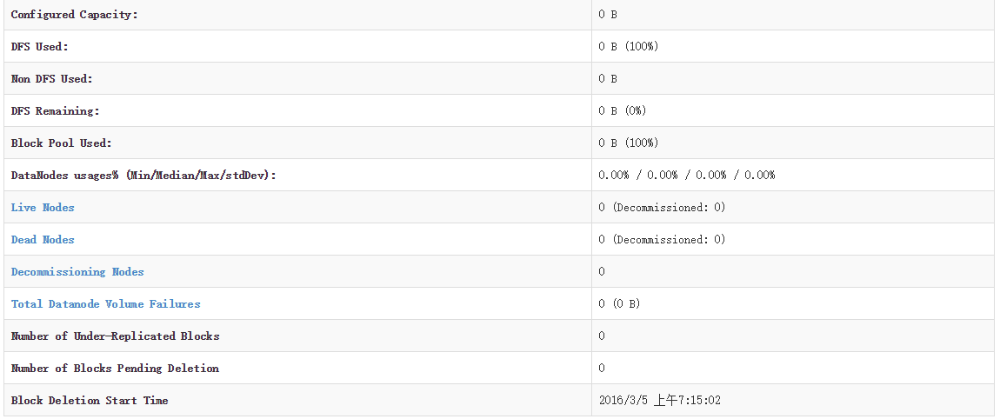
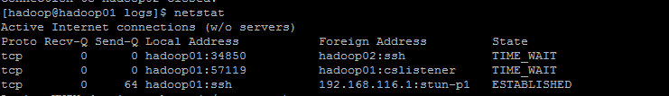
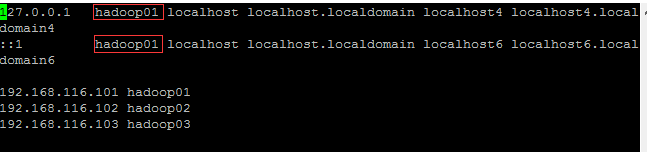
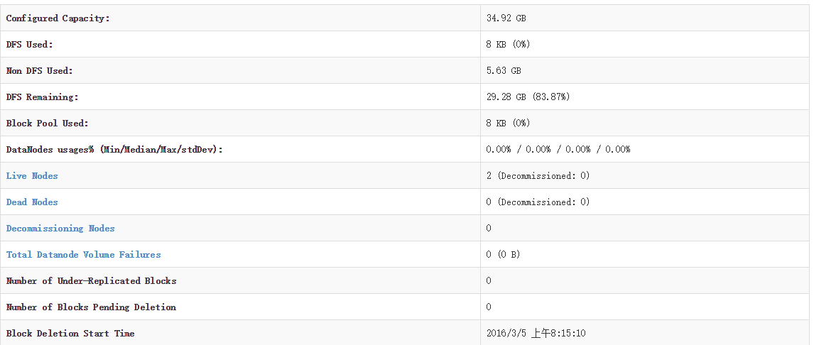

一次Hadoop集群启动成功但live node为0的问题解决过程
原文在CSDN，现在迁移到hexo。
问题描述
这两天用虚拟机搭建了hadoop集群环境，创建了三台虚拟机hadoop01，hadoop02，hadoop03，hadoop01代表Master，hadoop02以及hadoop03作为 Slave 节点。三台虚拟机都是centos7最小化安装。hadoop版本用的最新的版本2.7.2。
开始一切都很顺利，启动hadoop集群也成功启动，运行jps，三个节点对应的进程都成功启动，但是检查集群状态时发现live node 为0（如图）。

问题跟踪
这个就让人很郁闷了，检查了下 Slave 节点日志，发现一些异常的地方：
2016-03-05 07:34:23,972 WARN org.apache.hadoop.hdfs.server.datanode.DataNode: Problem connecting to server: hadoop01/192.168.116.101:9000
2016-03-05 07:34:29,980 INFO org.apache.hadoop.ipc.Client: Retrying connect to server: hadoop01/192.168.116.101:9000. Already tried 0 time(s); retry policy is RetryUpToMaximumCountWithFixedSleep(maxRetries=10, sleepTime=1000 MILLISECONDS)
2016-03-05 07:34:30,985 INFO org.apache.hadoop.ipc.Client: Retrying connect to server: hadoop01/192.168.116.101:9000. Already tried 1 time(s); retry policy is RetryUpToMaximumCountWithFixedSleep(maxRetries=10, sleepTime=1000 MILLISECONDS)
2016-03-05 07:34:31,989 INFO org.apache.hadoop.ipc.Client: Retrying connect to server: hadoop01/192.168.116.101:9000. Already tried 2 time(s); retry policy is RetryUpToMaximumCountWithFixedSleep(maxRetries=10, sleepTime=1000 MILLISECONDS)
2016-03-05 07:34:32,991 INFO org.apache.hadoop.ipc.Client: Retrying connect to server: hadoop01/192.168.116.101:9000. Already tried 3 time(s); retry policy is RetryUpToMaximumCountWithFixedSleep(maxRetries=10, sleepTime=1000 MILLISECONDS)
2016-03-05 07:34:33,995 INFO org.apache.hadoop.ipc.Client: Retrying connect to server: hadoop01/192.168.116.101:9000. Already tried 4 time(s); retry policy is RetryUpToMaximumCountWithFixedSleep(maxRetries=10, sleepTime=1000 MILLISECONDS)
2016-03-05 07:34:35,000 INFO org.apache.hadoop.ipc.Client: Retrying connect to server: hadoop01/192.168.116.101:9000. Already tried 5 time(s); retry policy is RetryUpToMaximumCountWithFixedSleep(maxRetries=10, sleepTime=1000 MILLISECONDS)
2016-03-05 07:34:36,002 INFO org.apache.hadoop.ipc.Client: Retrying connect to server: hadoop01/192.168.116.101:9000. Already tried 6 time(s); retry policy is RetryUpToMaximumCountWithFixedSleep(maxRetries=10, sleepTime=1000 MILLISECONDS)
2016-03-05 07:34:37,003 INFO org.apache.hadoop.ipc.Client: Retrying connect to server: hadoop01/192.168.116.101:9000. Already tried 7 time(s); retry policy is RetryUpToMaximumCountWithFixedSleep(maxRetries=10, sleepTime=1000 MILLISECONDS)
2016-03-05 07:34:38,006 INFO org.apache.hadoop.ipc.Client: Retrying connect to server: hadoop01/192.168.116.101:9000. Already tried 8 time(s); retry policy is RetryUpToMaximumCountWithFixedSleep(maxRetries=10, sleepTime=1000 MILLISECONDS)
2016-03-05 07:34:39,009 INFO org.apache.hadoop.ipc.Client: Retrying connect to server: hadoop01/192.168.116.101:9000. Already tried 9 time(s); retry policy is RetryUpToMaximumCountWithFixedSleep(maxRetries=10, sleepTime=1000 MILLISECONDS)
hadoop01节点的9000端口无法访问，在hadoop01上运行netstat，发现hadoop01上没有监听9000端口：

这个就让人很郁闷了，到底什么原因呢，防火墙早就关闭了啊，不应该会出现端口被拒绝。检查了半天也没检查到，最后终于发现罪魁祸首了，原来是hosts文件的问题。
在开始时我就将hadoop01节点上的/etc/hosts文件改成了下面的样子：

问题就出现在这两个红框出，我在设置时在127.0.0.1后面添加了hadoop01，这样hadoop在启动的时候，根据配置文件监听的时候监听的是hadoop01的9000端口，而这个hadoop01被解析成了127.0.0.1，这样hadoop01节点就不会监听192.168.116.101的9000端口，来自hadoop02和hadoop03的信息不会被hadoop01节点接收到，也就会出现hadoop02和hadoop03节点日志里面的内容，live node一直为0。
问题解决
方法一：修改hosts文件，删除上边红框的内容。
方法二：修改hadoop集群配置文件中的主机名，把所有主机名全换成对应的ip地址
修改后重新启动hadoop集群：
